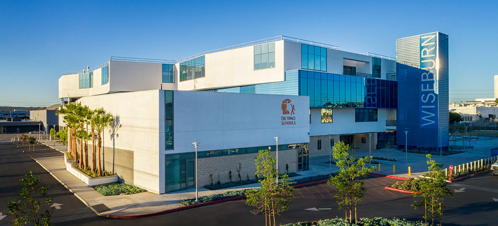

About our Team
Beginning in 2012 and hailing from Da Vinci High School in Hawthorne, CA, the Vitruvian Bots is composed of sixty-four students and seventeen mentors working towards the mindsets of education, engineering, innovation, and other important life skills. Every member of Team 4201 is being equipped with real life problem solving skills and real world experience designing and creating a robot designed to conduct rigorous tasks.
About our School
The members of 4201 are made up of the students from Da Vinci Schools, which are Science, Communications, and Design. Da Vinci Schools' focus is on collaborative project-based and real-world learning while keeping students feeling valued and safe. Da Vinci Science, Communications, and Design are neighboring schools in one building, but each school has their own floor. Although we are three different schools, we all come together as one big community. Our community feels like home.
